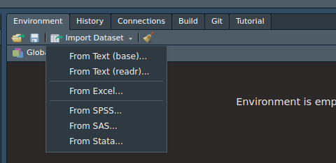

install.packages("tidyverse")13 Data Manipulation
13.1 Introduction
Data manipulation consists of transforming a data set to be analyzed. Certain statistical methods require data sets to be formatted in a certain way before you can apply a certain function1. Other times, you will need to transform the data set to present to stakeholder. Therefore, being able to transform a data set is essential.
13.1.1 Notes
Warnings Suppressed
In order to keep the page concise, the warning messages have been suppressed. These warnings were produced because functions were applied to incorrect inputs, ie \(\sqrt{A}\). Therefore, you may see NA as the output. There is nothing wrong with the code, it is just that the input was not valid, but R still completed the task.
13.2 Tidyverse
Tidyverse is a set of packages that make data manipulation much easier. These are functions that many individuals from the R community find useful to use for data analysis. In my opinion, once you have understand how Tidyverse packages function, it makes it much easier to work with than Base R. Many of the functions are descriptively named for easy remembrance. For the most part, you can do almost everything that Base R can do. There are just a few things you can’t do, but it is rare that you will use them. One last thing is that the output from tidyverse is always formatted as a tibble class, the Tidyverse version of the data frame. This can have some ups and downs. However, think of a tibble as a lazier data frame. If you haven’t done so, install tidyverse:
Then load tidyverse into R:
library(tidyverse)This will load the main Tidyverse packages: ggplot2::, tibble::, tidyr::, readr::, purr::, dplyr::, stringr::, and forcats::.
13.3 Loading Data
There are three methods to load a data set in R: using base R, using Tidyverse, or using RStudio. While it is important to understand how the code works to load a data set, I recommend using RStudio to import the data. It does all the work for you. Additionally, if you decide to use Tidyverse packages, RStudio will provide corresponding code for a particular file.
To import a data set using RStudio, head over to the environment tab (usually in the upper right hand pane) and click on the Import Dataset button. A pop-up window should look something like below.

Notice how there are several options to load a data set. Depending on the format, you may want to choose one of those options. Next, notice how there are 2 “From Text”. This is because it will load text data using either Base R packages or the readr:: package from tidyverse. Either works, but the readr:: package provides the necessary code to load the data set in the window. The other one provides the code in the console.
13.3.1 CSV Files
A CSV file is a type of text file that where the values are separated from commas. It is very common file that you will work with. Here I will provide the code necessary to import a CSV file using either Base R or readr:: code.
13.3.1.1 Base R
read.csv("FILE_NAME_AND_LOCATION")13.3.1.2 readr::
read_csv("FILE_NAME_AND_LOCATION")Notice that the functions are virtually the same.
13.3.2 For This Chapter
You will need to download and extract this zip file to conduct the analysis in the chapter. The code below will load the data sets you need:
data1 <- read_csv("data/data_3_1.csv")
data2 <- read_csv("data/data_3_2.csv")
data3 <- read_csv("data/data_3_3.csv")
data4 <- read_csv("data/data_3_6.csv")
data5 <- read_csv("data/data_3_7.csv")
data6 <- read_csv("data/data_3_5.csv")
data7 <- read_csv("data/data_3_4.csv")Make sure to change the file location as needed.
13.4 The Pipe Operator %>%
The main benefit of the pipe operator is to make the code easier to read. The pipe operator is from the magrittr::. It is usually loaded when you load the tidyverse::. What the pipe operator, %>%, does is that it will take the output from a previous function and it will use it as the input for the next function. This prevents us from nesting functions together and overwhelm us with numerous parentheses and commas. To practice, pipe data into the glimpse().
data1 %>% glimpse()Rows: 1,000
Columns: 10
$ ID1 <chr> "A2b6115fd", "Ac51c9cf1", "A7534d3a0", "A73fc5642", "Ae020e4bd", …
$ cat1 <chr> "A", "A", "A", "A", "C", "A", "A", "C", "B", "C", "B", "B", "A", …
$ cat2 <chr> "E", "D", "F", "F", "E", "D", "E", "F", "E", "E", "F", "E", "E", …
$ var1 <dbl> 1.1541672, -0.3667030, -0.4203357, -2.0006336, 0.6970417, 0.46690…
$ var2 <dbl> 4, 3, 6, 5, 3, 4, 5, 0, 5, 3, 3, 8, 4, 5, 2, 5, 7, 7, 5, 1, 4, 3,…
$ var3 <dbl> 2.87981553, 0.06397162, -1.04021753, -0.31355281, 0.52613439, 2.4…
$ var4 <dbl> 3.53845785, 1.07279559, 0.22632480, 0.02128418, 2.97936180, 1.853…
$ var5 <dbl> -3.1827969, -3.1827969, -3.1827969, -3.1827969, 6.0601967, -3.182…
$ var6 <dbl> 0, 0, 0, 0, 0, 0, 0, 0, 0, 0, 0, 0, 0, 0, 0, 0, 0, 0, 0, 0, 0, 0,…
$ var7 <dbl> 1, 0, 0, 0, 0, 0, 1, 1, 0, 1, 0, 1, 0, 1, 1, 0, 1, 0, 1, 0, 1, 1,…The glimpse() provides basic variable information about data1. I recommend practice reading the code in plain English to help you understand how these functions.
13.5 Data Transformation
This section focuses on manipulating the data to obtain basic statistics, such as obtaining the mean for different categories. Many of the functions used here are from the dplyr::.
13.5.1 Summarizing Data
Summarizing Data is one of the most important thing in statistics. First, let’s get the mean for all the variables in data1. This is done by using the summarize_all(). All you need to do is provide the function you want R to provide. Pipe data1 into the summarize_all() and specify mean in the function.
data1 %>% summarise_all(mean)# A tibble: 1 × 10
ID1 cat1 cat2 var1 var2 var3 var4 var5 var6 var7
<dbl> <dbl> <dbl> <dbl> <dbl> <dbl> <dbl> <dbl> <dbl> <dbl>
1 NA NA NA -0.0335 4.94 0.936 1.96 0.774 0 0.394Notice how some values are NA, this is because the variables are character data types. Therefore, it will not be able to compute the mean. Now find the standard deviation for the data set.
data1 %>% summarise_all(sd)# A tibble: 1 × 10
ID1 cat1 cat2 var1 var2 var3 var4 var5 var6 var7
<dbl> <dbl> <dbl> <dbl> <dbl> <dbl> <dbl> <dbl> <dbl> <dbl>
1 NA NA NA 1.00 2.22 1.02 1.00 3.93 0 0.489Now lets create a frequency table for the cat1 variable in data1. use the count() and specify the variable you are interested in:
data1 %>% count(cat1)# A tibble: 3 × 2
cat1 n
<chr> <int>
1 A 332
2 B 328
3 C 340Now, repeat for cat2 in data1:
data1 %>% count(cat2)# A tibble: 3 × 2
cat2 n
<chr> <int>
1 D 322
2 E 337
3 F 34113.5.2 Grouping
Summarizing data is great, but sometimes you may want to group data and obtain summary statistics for those groups. This is done by using the group_by() and specify which variable you want to group. Try grouping data1 by cat1:
data1 %>% group_by(cat1)# A tibble: 1,000 × 10
# Groups: cat1 [3]
ID1 cat1 cat2 var1 var2 var3 var4 var5 var6 var7
<chr> <chr> <chr> <dbl> <dbl> <dbl> <dbl> <dbl> <dbl> <dbl>
1 A2b6115fd A E 1.15 4 2.88 3.54 -3.18 0 1
2 Ac51c9cf1 A D -0.367 3 0.0640 1.07 -3.18 0 0
3 A7534d3a0 A F -0.420 6 -1.04 0.226 -3.18 0 0
4 A73fc5642 A F -2.00 5 -0.314 0.0213 -3.18 0 0
5 Ae020e4bd C E 0.697 3 0.526 2.98 6.06 0 0
6 Ac0d3b0fe A D 0.467 4 2.45 1.85 -3.18 0 0
7 A2edfed41 A E 1.36 5 0.514 0.529 -3.18 0 1
8 Ad38a4bbe C F 0.369 0 1.98 2.36 6.06 0 1
9 A5ee0f97f B E 1.80 5 0.147 2.22 -0.701 0 0
10 Ad791c03d C E 1.25 3 -1.05 0.0289 6.06 0 1
# … with 990 more rowsGreat! You now have grouped data; however, this is not helpful. We can use this output and summarize the groups. All we need to do is pipe the output to the summarise_all(). Group data1 by cat1 and find the mean:
data1 %>% group_by(cat1) %>% summarise_all(mean)# A tibble: 3 × 10
cat1 ID1 cat2 var1 var2 var3 var4 var5 var6 var7
<chr> <dbl> <dbl> <dbl> <dbl> <dbl> <dbl> <dbl> <dbl> <dbl>
1 A NA NA -0.0369 4.79 0.877 1.97 -3.18 0 0.401
2 B NA NA -0.0345 4.98 1.01 1.97 -0.701 0 0.390
3 C NA NA -0.0292 5.05 0.922 1.94 6.06 0 0.391If we want to group by two variables, all we need to do is specify both variables in the group_by(). Group data1 by cat1 and cat2 then find the mean:
data1 %>% group_by(cat1,cat2) %>% summarise_all(mean)# A tibble: 9 × 10
# Groups: cat1 [3]
cat1 cat2 ID1 var1 var2 var3 var4 var5 var6 var7
<chr> <chr> <dbl> <dbl> <dbl> <dbl> <dbl> <dbl> <dbl> <dbl>
1 A D NA -0.0186 4.87 0.858 1.93 -3.18 0 0.374
2 A E NA -0.0265 4.70 0.882 1.94 -3.18 0 0.393
3 A F NA -0.0661 4.79 0.890 2.03 -3.18 0 0.436
4 B D NA -0.152 5.21 1.01 1.96 -0.701 0 0.333
5 B E NA 0.0890 5.04 1.04 1.94 -0.701 0 0.417
6 B F NA -0.0659 4.72 0.979 2.03 -0.701 0 0.411
7 C D NA -0.160 5.01 0.927 1.87 6.06 0 0.378
8 C E NA -0.000228 5.07 0.910 2.00 6.06 0 0.345
9 C F NA 0.0662 5.07 0.930 1.94 6.06 0 0.445Now, instead of finding the mean for all variables in a data set, we are only interested in viewing var1. We can use the summarise() and type the R code for finding the mean for the particular variable. Group data1 by cat1 and find the mean for var1:
data1 %>% group_by(cat1) %>% summarise(mean(var1))# A tibble: 3 × 2
cat1 `mean(var1)`
<chr> <dbl>
1 A -0.0369
2 B -0.0345
3 C -0.029213.5.3 Subsets
On occasion, you may need to create a subset of your data. You may only want to work with one part of your data. To create a subset of your data, use the filter() to create the subset. This will select the rows that satisfy a certain condition. Create a subset of data1 where only the positive values of var1 are present. Use the filter() and state var1>0.
data1 %>% filter(var1>0)# A tibble: 484 × 10
ID1 cat1 cat2 var1 var2 var3 var4 var5 var6 var7
<chr> <chr> <chr> <dbl> <dbl> <dbl> <dbl> <dbl> <dbl> <dbl>
1 A2b6115fd A E 1.15 4 2.88 3.54 -3.18 0 1
2 Ae020e4bd C E 0.697 3 0.526 2.98 6.06 0 0
3 Ac0d3b0fe A D 0.467 4 2.45 1.85 -3.18 0 0
4 A2edfed41 A E 1.36 5 0.514 0.529 -3.18 0 1
5 Ad38a4bbe C F 0.369 0 1.98 2.36 6.06 0 1
6 A5ee0f97f B E 1.80 5 0.147 2.22 -0.701 0 0
7 Ad791c03d C E 1.25 3 -1.05 0.0289 6.06 0 1
8 Af88d3ab5 B E 2.10 8 3.07 3.29 -0.701 0 1
9 A429b65a6 A E 1.46 4 0.0638 2.36 -3.18 0 0
10 A3638155a A F 0.429 5 1.76 1.55 -3.18 0 1
# … with 474 more rowsIf you know which rows you want, you can use the slice() and specify the rows as a vector. Create a subset of data1 and select the rows 100 to 200 and 300 to 400.
data1 %>% slice(c(100:200, 300:400))# A tibble: 202 × 10
ID1 cat1 cat2 var1 var2 var3 var4 var5 var6 var7
<chr> <chr> <chr> <dbl> <dbl> <dbl> <dbl> <dbl> <dbl> <dbl>
1 A568e9a48 A E 1.88 6 2.59 4.02 -3.18 0 1
2 Aa77dca83 B D 1.32 5 0.889 3.12 -0.701 0 1
3 A901d56c2 C F -0.406 6 0.496 3.67 6.06 0 0
4 Ad66ce513 A D 1.04 2 0.331 0.00523 -3.18 0 0
5 A897a230d B E -0.616 9 1.61 3.08 -0.701 0 0
6 Afbc693a4 B F -0.404 7 -0.604 0.149 -0.701 0 1
7 Ae7269323 C F -0.176 4 1.06 2.26 6.06 0 0
8 A182729af A D 1.11 7 -0.297 1.45 -3.18 0 1
9 A1a06950b C E -1.29 5 1.78 3.07 6.06 0 1
10 A569c9d81 A F 1.28 6 0.683 1.53 -3.18 0 0
# … with 192 more rowsIf you need random sample of your data1, use the sample_n() and specify the number you want. It will create a data set of randomly selected rows. Create a random sample of data1 of 100 rows.
data1 %>% sample_n(100)# A tibble: 100 × 10
ID1 cat1 cat2 var1 var2 var3 var4 var5 var6 var7
<chr> <chr> <chr> <dbl> <dbl> <dbl> <dbl> <dbl> <dbl> <dbl>
1 C1ef06cb4 C F -0.644 4 0.437 2.72 6.06 0 1
2 D3330348d C F -0.400 5 0.612 0.328 6.06 0 0
3 Af8cb44f9 B F -1.28 5 0.666 2.11 -0.701 0 0
4 A53a2d149 C E 1.82 7 2.47 1.61 6.06 0 0
5 C3bc23c17 A D -0.580 2 1.63 2.89 -3.18 0 0
6 Bff01dea3 A D 1.93 3 0.390 1.75 -3.18 0 0
7 Bdc2b50b1 A E 0.105 4 1.78 2.76 -3.18 0 1
8 Df48d4b9d C D -0.354 3 -0.913 1.01 6.06 0 1
9 A9a648d3b C F -2.42 4 -0.0663 0.635 6.06 0 0
10 Dadce0c54 A F 0.929 6 1.16 2.11 -3.18 0 0
# … with 90 more rowsIf you want a random sample that is proportion of your original data size, use the sample_frac(). Specify the proportion that you want from the data. Create a random sample of data1 that is only 2/7th of the original size.
data1 %>% sample_frac(2/7)# A tibble: 286 × 10
ID1 cat1 cat2 var1 var2 var3 var4 var5 var6 var7
<chr> <chr> <chr> <dbl> <dbl> <dbl> <dbl> <dbl> <dbl> <dbl>
1 C5fc4a9e0 A D 0.360 8 1.65 2.58 -3.18 0 1
2 B44e4fc90 A E 1.40 3 1.65 3.87 -3.18 0 1
3 Aeb2d0efe A D -0.210 1 1.30 3.06 -3.18 0 0
4 C023b4154 B F 1.42 5 1.89 2.89 -0.701 0 0
5 C41500f79 B D 0.306 6 -0.552 0.452 -0.701 0 1
6 De413c9a9 C D -1.71 6 0.863 1.50 6.06 0 0
7 Afad20640 A F -0.141 4 0.787 2.44 -3.18 0 0
8 A10c8e0a7 B E 2.03 5 2.31 3.97 -0.701 0 1
9 Bf888da1c C D -1.53 2 0.776 0.833 6.06 0 1
10 A429b65a6 A E 1.46 4 0.0638 2.36 -3.18 0 0
# … with 276 more rows13.5.4 Creating Variables
Some times you may need to transform variables to a new variable. This can be done by using the mutate() where you specify the name of the new variable and set equal to the transformation of other variables. Using the data2 data set, create a new variable called logvar1 and set that to the log of va1.
data2 %>% mutate(logvar1 = log(va1))# A tibble: 1,000 × 6
ID1 ID_1 ID_2 va1 va2 logvar1
<chr> <chr> <chr> <dbl> <dbl> <dbl>
1 A2b6115fd 2b6115fd A 0.458 81.4 -0.782
2 Ac51c9cf1 c51c9cf1 A 0.236 -1.15 -1.44
3 A7534d3a0 7534d3a0 A 0.254 1.16 -1.37
4 A73fc5642 73fc5642 A 0.0411 -1.21 -3.19
5 Ae020e4bd e020e4bd A 0.266 -2.31 -1.32
6 Ac0d3b0fe c0d3b0fe A 0.00992 -0.882 -4.61
7 A2edfed41 2edfed41 A 0.293 -0.375 -1.23
8 Ad38a4bbe d38a4bbe A 0.261 -1.09 -1.34
9 A5ee0f97f 5ee0f97f A 0.186 -6.14 -1.68
10 Ad791c03d d791c03d A 0.0368 -0.258 -3.30
# … with 990 more rowsThe mutate() allows you to create multiple new variables at once. Id addition to logvar1, create a new variable called sqrtvar2 and set that equal to the square root of va2.
data2 %>% mutate(logvar1 = log(va1), sqrtvar2 = sqrt(va2))# A tibble: 1,000 × 7
ID1 ID_1 ID_2 va1 va2 logvar1 sqrtvar2
<chr> <chr> <chr> <dbl> <dbl> <dbl> <dbl>
1 A2b6115fd 2b6115fd A 0.458 81.4 -0.782 9.02
2 Ac51c9cf1 c51c9cf1 A 0.236 -1.15 -1.44 NaN
3 A7534d3a0 7534d3a0 A 0.254 1.16 -1.37 1.08
4 A73fc5642 73fc5642 A 0.0411 -1.21 -3.19 NaN
5 Ae020e4bd e020e4bd A 0.266 -2.31 -1.32 NaN
6 Ac0d3b0fe c0d3b0fe A 0.00992 -0.882 -4.61 NaN
7 A2edfed41 2edfed41 A 0.293 -0.375 -1.23 NaN
8 Ad38a4bbe d38a4bbe A 0.261 -1.09 -1.34 NaN
9 A5ee0f97f 5ee0f97f A 0.186 -6.14 -1.68 NaN
10 Ad791c03d d791c03d A 0.0368 -0.258 -3.30 NaN
# … with 990 more rowsIf you want to create categorical variables, use the mutate() and the if_else(). The if_else() requires three arguments: condition=, true=, and false=. The first argument requires a condition that will return a logical value. If true, then R will assign what is stated in the true=, otherwise R will assign what is in the false=. To begin, find the median of va1 from data2 and assign it to medval.
medval <- data2$va1 %>% median() No create a new variable called diva1 where if va1 is greater than the median of va1, assign it “A”, otherwise assign it “B”.
data2 %>% mutate(diva1=if_else(va1>medval,"A","B"))# A tibble: 1,000 × 6
ID1 ID_1 ID_2 va1 va2 diva1
<chr> <chr> <chr> <dbl> <dbl> <chr>
1 A2b6115fd 2b6115fd A 0.458 81.4 A
2 Ac51c9cf1 c51c9cf1 A 0.236 -1.15 B
3 A7534d3a0 7534d3a0 A 0.254 1.16 B
4 A73fc5642 73fc5642 A 0.0411 -1.21 B
5 Ae020e4bd e020e4bd A 0.266 -2.31 B
6 Ac0d3b0fe c0d3b0fe A 0.00992 -0.882 B
7 A2edfed41 2edfed41 A 0.293 -0.375 A
8 Ad38a4bbe d38a4bbe A 0.261 -1.09 B
9 A5ee0f97f 5ee0f97f A 0.186 -6.14 B
10 Ad791c03d d791c03d A 0.0368 -0.258 B
# … with 990 more rows13.5.5 Merging Datasets
One of the last thing is to go over how to merge data sets together. To merge the data sets, we use the full_join(). The full_join() needs two data sets (separated by commas) and the by= which provides the variables needed (must be the same name for each data set) to merge the data sets. Merge data1 and data2 with the variable ID1.
full_join(data1, data2, by = "ID1")# A tibble: 1,000 × 14
ID1 cat1 cat2 var1 var2 var3 var4 var5 var6 var7 ID_1 ID_2
<chr> <chr> <chr> <dbl> <dbl> <dbl> <dbl> <dbl> <dbl> <dbl> <chr> <chr>
1 A2b61… A E 1.15 4 2.88 3.54 -3.18 0 1 2b61… A
2 Ac51c… A D -0.367 3 0.0640 1.07 -3.18 0 0 c51c… A
3 A7534… A F -0.420 6 -1.04 0.226 -3.18 0 0 7534… A
4 A73fc… A F -2.00 5 -0.314 0.0213 -3.18 0 0 73fc… A
5 Ae020… C E 0.697 3 0.526 2.98 6.06 0 0 e020… A
6 Ac0d3… A D 0.467 4 2.45 1.85 -3.18 0 0 c0d3… A
7 A2edf… A E 1.36 5 0.514 0.529 -3.18 0 1 2edf… A
8 Ad38a… C F 0.369 0 1.98 2.36 6.06 0 1 d38a… A
9 A5ee0… B E 1.80 5 0.147 2.22 -0.701 0 0 5ee0… A
10 Ad791… C E 1.25 3 -1.05 0.0289 6.06 0 1 d791… A
# … with 990 more rows, and 2 more variables: va1 <dbl>, va2 <dbl>The full_join() allows you to merge data sets using two variables instead of one. All you need to do is specify by= with a vector specifying the arguments. Merge data2 and data3 by ID_1 and ID_2.
full_join(data2, data3, by = c("ID_1","ID_2"))# A tibble: 1,000 × 8
ID1.x ID_1 ID_2 va1 va2 ID1.y v1 v2
<chr> <chr> <chr> <dbl> <dbl> <chr> <dbl> <dbl>
1 A2b6115fd 2b6115fd A 0.458 81.4 A2b6115fd 0.361 0.278
2 Ac51c9cf1 c51c9cf1 A 0.236 -1.15 Ac51c9cf1 0.273 2.64
3 A7534d3a0 7534d3a0 A 0.254 1.16 A7534d3a0 1.17 0.119
4 A73fc5642 73fc5642 A 0.0411 -1.21 A73fc5642 0.879 0.705
5 Ae020e4bd e020e4bd A 0.266 -2.31 Ae020e4bd 0.0268 0.297
6 Ac0d3b0fe c0d3b0fe A 0.00992 -0.882 Ac0d3b0fe 1.18 3.16
7 A2edfed41 2edfed41 A 0.293 -0.375 A2edfed41 0.356 0.174
8 Ad38a4bbe d38a4bbe A 0.261 -1.09 Ad38a4bbe 0.430 0.130
9 A5ee0f97f 5ee0f97f A 0.186 -6.14 A5ee0f97f 0.643 0.0231
10 Ad791c03d d791c03d A 0.0368 -0.258 Ad791c03d 0.183 0.311
# … with 990 more rows13.6 Reshaping Data
This section focuses on reshaping the data to prepare it for analysis. For example, to conduct longitudinal data analysis, you will need to have long data. Reshaping data may be with converting data from wide to long, converting back from long to wide, splitting variables, splitting rows and merging variable. The functions used in this lesson are from the tidy::
13.6.1 Wide to Long Data
Converting data from wide to long is necessary when the data looks like data4, view data4:
data4# A tibble: 1,000 × 5
ID1 X1 X2 X3 X4
<chr> <dbl> <dbl> <dbl> <dbl>
1 Ad9131ee9 0.800 4.68 1.46 5.35
2 A9c5988ea 1.17 1.50 4.83 3.75
3 A28a5479d 1.85 2.64 2.39 4.34
4 Aaf5537cc 1.55 2.28 3.35 3.76
5 A370958bd -1.36 2.48 2.06 4.70
6 Aea997e13 2.37 3.27 3.11 3.31
7 A3563646f 2.10 -0.902 2.49 2.75
8 A9b3cfdba -0.513 0.271 2.97 2.97
9 A32b6737a 1.28 2.02 3.48 4.87
10 A30e96748 1.30 1.72 2.11 2.04
# … with 990 more rowsLet’s say data4 represents biomarker data. Variable ID1 represents a unique identifier for the participant. Then X1, X2, X3, and X4 represents a value collected for a participant at different time point. This is know as repeated measurements. This data is considered wide because the repeated measurements are on the same row. To make it long, the repeated measurements must be on the same column.
To convert data from long to wide, we will use the pivot_longer() with the first argument taking variables of the repeated measurements, c(X1:X4) or X1:X4, the second argument asks for the name for the variable that contains the stored repeated measurements, the variable names, and the last variable asks for the name for all the values, the data collected. Convert the data4 to long and name the variable names column "measurement", and values column "value".
data4 %>% pivot_longer(X1:X4, "measurement", "value")# A tibble: 4,000 × 3
ID1 measurement value
<chr> <chr> <dbl>
1 Ad9131ee9 X1 0.800
2 Ad9131ee9 X2 4.68
3 Ad9131ee9 X3 1.46
4 Ad9131ee9 X4 5.35
5 A9c5988ea X1 1.17
6 A9c5988ea X2 1.50
7 A9c5988ea X3 4.83
8 A9c5988ea X4 3.75
9 A28a5479d X1 1.85
10 A28a5479d X2 2.64
# … with 3,990 more rows13.6.2 Long to Wide
If you need to convert data from long to wide, use the pivot_wider(). You will need to specify the names_from= which specifies the variable names for the wide data set, and you will need to specify the values_from= that specifies variable that contains the values in the long data set. Convert data5 from long to wide data. Note, you must specify the arguments for this function.
data5 %>% pivot_wider(names_from = measurement,
values_from = value)# A tibble: 1,000 × 5
ID1 X1 X2 X3 X4
<chr> <dbl> <dbl> <dbl> <dbl>
1 Ad9131ee9 0.800 4.68 1.46 5.35
2 A9c5988ea 1.17 1.50 4.83 3.75
3 A28a5479d 1.85 2.64 2.39 4.34
4 Aaf5537cc 1.55 2.28 3.35 3.76
5 A370958bd -1.36 2.48 2.06 4.70
6 Aea997e13 2.37 3.27 3.11 3.31
7 A3563646f 2.10 -0.902 2.49 2.75
8 A9b3cfdba -0.513 0.271 2.97 2.97
9 A32b6737a 1.28 2.02 3.48 4.87
10 A30e96748 1.30 1.72 2.11 2.04
# … with 990 more rows13.6.3 Spliting Variables
Before we begin, look at data6:
Notice how the merge variable has two values separated by “/”. If we need to split the variable into two variables, we need to specify the separate(). All you need to specify is the variable you need to split, the name of the 2 new variables, in a character vector, and how to split the variable "/". Split the variable merge in data6 to two new variables called X1 and X2.
data6 %>% separate(merge, c("X1", "X2"), "/")# A tibble: 1,000 × 5
ID1 X1 X2 X3 X4
<chr> <chr> <chr> <dbl> <dbl>
1 Ad9131ee9 -1.23 2.64 2.12 3.56
2 A9c5988ea 1.74 3.02 4.09 4.88
3 A28a5479d 0.87 3.56 3.47 4.47
4 Aaf5537cc 1.05 2.01 3.61 5.03
5 A370958bd -1.47 1.26 3.98 6.59
6 Aea997e13 1.66 3.51 1.65 2.72
7 A3563646f 1.81 1.7 4.29 3.13
8 A9b3cfdba 1.8 2.26 1.94 5.23
9 A32b6737a 2.38 1.68 3.06 3.3
10 A30e96748 1 2.17 2.59 3.03
# … with 990 more rows13.6.4 Splitting Rows
The variable merge in data6 was split into different variables before, now instead of variables, let’s split it into different rows instead. To do this, use the separate_rows(). All you need to specify the variable name and the sep= (must state the argument). Split the merge variable from data6 into different rows.
data6 %>% separate_rows(merge, sep = "/")# A tibble: 2,000 × 4
ID1 merge X3 X4
<chr> <chr> <dbl> <dbl>
1 Ad9131ee9 -1.23 2.12 3.56
2 Ad9131ee9 2.64 2.12 3.56
3 A9c5988ea 1.74 4.09 4.88
4 A9c5988ea 3.02 4.09 4.88
5 A28a5479d 0.87 3.47 4.47
6 A28a5479d 3.56 3.47 4.47
7 Aaf5537cc 1.05 3.61 5.03
8 Aaf5537cc 2.01 3.61 5.03
9 A370958bd -1.47 3.98 6.59
10 A370958bd 1.26 3.98 6.59
# … with 1,990 more rows13.6.5 Merging Rows
If you need to merge variables together, similar to the merge variable, use the unite(). All you need to do is specify the variables to merge, the col= which specifies the name of the new variable (as a character), and the sep= which indicates the symbol for separate value, as a character. Note, you need to specify the bot the col= and sep=. Merge variable X3 and X4 in data6 to a new variable called merge2 and have the separator be a hyphen.
data6 %>% unite(X3, X4, col = "merge2", sep="-")# A tibble: 1,000 × 3
ID1 merge merge2
<chr> <chr> <chr>
1 Ad9131ee9 -1.23/2.64 2.12-3.56
2 A9c5988ea 1.74/3.02 4.09-4.88
3 A28a5479d 0.87/3.56 3.47-4.47
4 Aaf5537cc 1.05/2.01 3.61-5.03
5 A370958bd -1.47/1.26 3.98-6.59
6 Aea997e13 1.66/3.51 1.65-2.72
7 A3563646f 1.81/1.7 4.29-3.13
8 A9b3cfdba 1.8/2.26 1.94-5.23
9 A32b6737a 2.38/1.68 3.06-3.3
10 A30e96748 1/2.17 2.59-3.03
# … with 990 more rows13.7 Applied Example
Here is an applied example where you will use what you learned from the previous lesson and convert data7 into data8. data7 has a wide data format which contains time points labeled as vX, where X represents the time point number. At each time point, the mean, sd, and median was taken. You will need to convert the data to long where each row represents a new time point, and each row will have 3 variables representing the mean, sd, and median. View both data7 and data8 to have a better idea on what is going on. Remember you need to convert data7 to data8.
Now that you viewed the data set, type the code to convert data7 to data8. Try working it out before you look at the solution.
data7 %>% pivot_longer(`v1/mean`:`v4/median`,"measurement","value") %>%
separate(measurement,c("time","stat"),sep="/") %>%
pivot_wider(names_from = stat,values_from = value)# A tibble: 4,000 × 5
ID1 time mean sd median
<chr> <chr> <dbl> <dbl> <dbl>
1 Ad9131ee9 v1 3.11 2.86 4.50
2 Ad9131ee9 v2 1.93 3.21 3.27
3 Ad9131ee9 v3 2.65 -0.383 3.23
4 Ad9131ee9 v4 0.605 0.883 4.65
5 A9c5988ea v1 2.03 2.90 2.08
6 A9c5988ea v2 0.709 2.27 4.13
7 A9c5988ea v3 1.45 2.01 2.84
8 A9c5988ea v4 0.710 3.03 -0.0898
9 A28a5479d v1 -0.415 2.42 2.47
10 A28a5479d v2 2.38 -0.820 1.22
# … with 3,990 more rowsLinear Mixed-Effects Models.↩︎